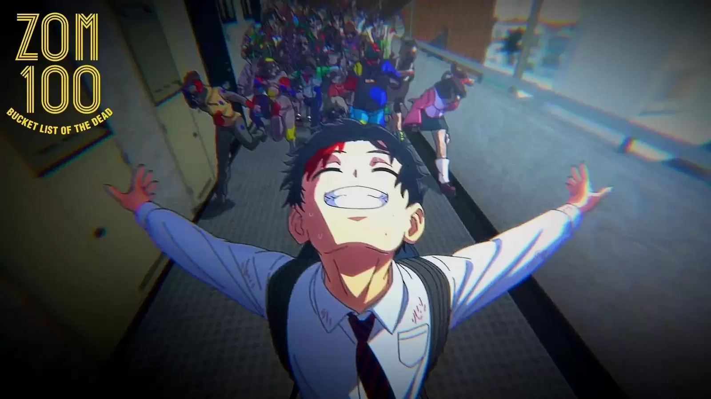

One Piece is a Japanese anime television series produced by Toei Animation that premiered on Fuji TV in October 1999. It is based on Eiichiro Oda's manga series of the same name.

Akira and Kencho flee into the basement of a department store and meet a trio of flight attendants - checking one more item off the bucket list. When a zombie apocalypse starts, Akira Tendô discovers a newfound thrill and purpose amidst the danger and decides to fulfill his last 100 wishes before turning into a zombie.


When man-eating Titans first appeared 100 years ago, humans found safety behind massive walls that stopped the giants in their tracks. But the safety they have had for so long is threatened when a colossal Titan smashes through the barriers, causing a flood of the giants into what had been the humans' safe zone.